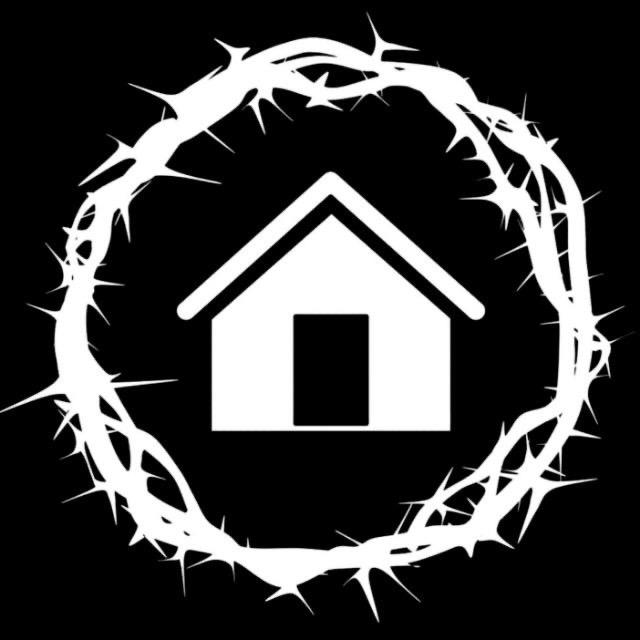

CONFISSÃO DE FÉ
- DNA
- MISSÃO
- VISÃO
- HISTORIA

HISTÓRIA DA IGREJA
FAMILIA CASA DO REINO
Em 2018 três famílias começaram a se reunir para compartilhar da leitura e entendimento das escrituras sagradas, orar e adorar ao senhor em cultos familiares. Os encontros aconteciam nas casas, e por isso, começamos de forma carinhosa a chamar esses encontros de casa do reino por estarmos aprendendo sobre o reino nos ambientes familiares.
Esses encontros foram acontecendo desenvolvendo discipulados, crescimento espiritual e aconselhamento, amadurecendo nosso caráter para expressar a imagem de cristo jesus.
Em 2020, devido a pandemia tivemos que mudar nossa forma de se encontrar e começamos a realizar encontros onlines que se tornaram lives, e assim cresceram publicamente entre pessoas que estavam buscando conhecer mais do senhor
Em agosto de 2020 após a permissão de retorno dos encontros, tivemos nossa primeira celebração da ceia, realizada no quintal de uma irmã da nossa comunidade, aonde tivemos dezenas de pessoas cultuando ao
Permanecemos nossos encontros presenciais no quintal da irmã, nossas lives e nossas orações e estudos com as famílias, até que conseguimos nossa "primeira casa" um pequeno lugar que de forma carinhosa apelidamos de "caixotinho" aonde iniciamos nosso trabalho como igreja local para servir ao propósito apostólico do senhor para a igreja.
NO QUE ACREDITAMOS
BÍBLIA
a bíblia (antigo e novo testamento) é inspirada na infalível, inerrante e perfeita palavra de deus. É nossa única e imutável fonte de fé, que ensina o que crer concernente à deus, à salvação e à vida piedosa.
toda a escritura é divinamente inspirada, e proveitosa para ensinar, para redargüir, para corrigir, para instruir em justiça; 2 timóteo 3:16
TRINDADE
há um só deus, existindo eternamente em três pessoas: pai, filho e espírito santo. Todos os três são iguais em essência, poder e glória. E são igualmente dignos de nossa adoração e obediência.
"mas o que nos confirma convosco em cristo, e o que nos ungiu, é deus, o qual também nos selou e deu o penhor do espírito em nossos corações." 2 coríntios 1:21,22
IGREJA LOCAL
a igreja é o corpo e a noiva de cristo, composta por todos os verdadeiros cristãos em todos os lugares. em nível local os cristãos estão unidos com o propósito de glorificar a deus, vivendo autenticamente uma comunidade de amor e impactando sua cultura com o evangelho. compreendemos que todo crente que faz parte da igreja deve assumir suas responsabilidades locais. Entre elas está: o sustento da obra local, através da fidelidade nos dízimos e a generosidade nas ofertas, que são entregues a deus e administradas pela comunidade local.
e perseveravam na doutrina dos apóstolos, e na comunhão, e no partir do pão, e nas orações. Atos 2:42
CRISTO VOLTARÁ
nós cremos na volta pessoal e iminente do senhor jesus cristo, que virá para aqueles que foram redimidos por ele e para julgar os vivos e os mortos. Nós não sabemos quando jesus voltará, mas sabemos que ele virá novamente. Enquanto esperamos e aguardamos por esse dia, lidamos com as coisas de deus pai.
"eis que venho em breve! A minha recompensa está comigo, e eu retribuirei a cada um de acordo com o que fez. apocalipse 22:12
MINISTERIO DE DONS
nós acreditamos que deus é soberano na concessão dos dons espirituais. é, no entanto, a responsabilidade do crente buscar os melhores dons e desenvolver cada dom espiritual concedido soberanamente. O batismo no espírito santo ocorre com a conversão, e é a colocação do crente no corpo de cristo. Acreditamos que é privilégio e responsabilidade de cada crente ministrar de acordo com os dons da graça de deus, que são dados a ele.
segui o amor, e procurai com zelo os dons espirituais... 1 coríntios 14:1
VOLUNTARIADO
nós acreditamos que não existe "ministério de telespectador', isto é, todos nós somos chamados para servir ao reino. entendemos que todos que se tornam igreja conosco irão amadurecer em cristo para servir ao próximo em ministérios locais.
porque a ardente expectação da criatura espera a manifestação dos filhos de deus. romanos 8:19
O QUE SOMOS
bíblica
somos uma igreja que se baseia plenamente nas escrituras, desde a nossa recepção até as ministrações no palco, nossos projetos, os cânticos entoados e as obras realizadas, tudo passa pelo filtro bíblico para que haja fidelidade a vontade do senhor em sermos cristo cêntricos.
família
somos família pois acreditamos que a melhor forma de falar sobre o reino na prática é através do ambiente familiar. a casa do reino nasceu através do ambiente familiar e assim trabalhamos para nos manter dessa forma em nossos relacionamentos. sendo assim, um ambiente bem humorado, um ambiente de cooperação, vulnerabilidade e de harmonia. sabemos que uma igreja saudável é consequência de famílias saudáveis, por isso sempre enfatizamos a importância da família. Passamos por três passos para isso:
- ambiente familiar
- ensino e trabalho pela família dos membros
- famílias apostólicas ( que geram outras famílias para cristo)
CONTEMPORÂNEA
somos uma igreja que acreditamos que precisamos ser resposta para a geração que estamos inserida, para isso trabalhamos para que possamos ter uma linguagem que dialogue com o nossa geração. dessa forma buscamos estar atualizados a respeitos dos acontecimentos e da forma como a cultura se desenvolve para que possamos ser resistentes a aquilo que é contra a palavra, e sermos braços de apoio a aqueles que estão buscando saída daquilo que acontece nessa geração.
missional
somos uma igreja que trabalha para alcançar os perdidos através do nosso serviço ao reino de deus. acreditamos que nossos ofícios são nossos púlpitos no mundo, para que possamos manifestar o reino de deus. somos missionários disfarçados nas nossas respectivas profissões. Então crescemos e amadurecemos para ser igreja aonde estivermos.
FAMÍLIA CASA DO REINO
de forma breve respondemos que somos uma igreja: cristã, evangélica, missional e reformada; alguns pontos mais sutis e questões secundárias, agimos de forma mais pessoal e intencioanal com cada membro